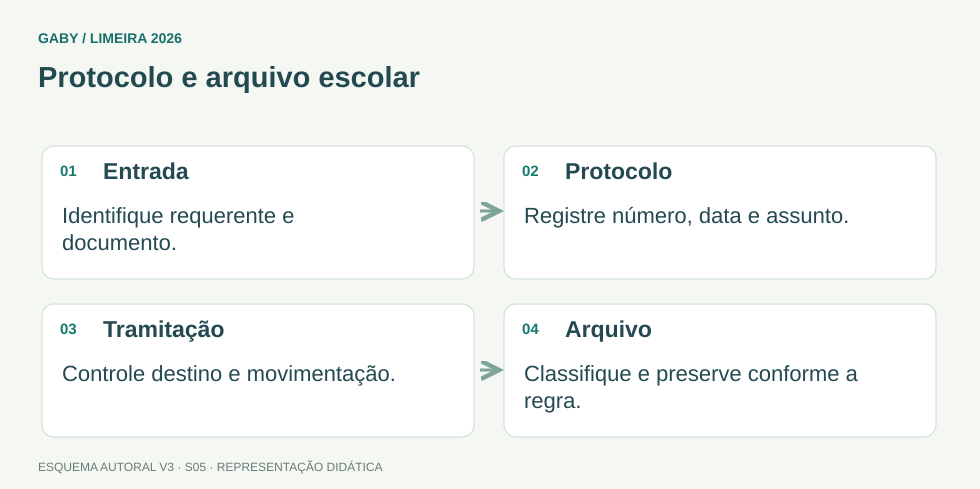

Objetivos do módulo
- Entender protocolo como controle de entrada, saída e tramitação.
- Aplicar noções de classificação e localização de documentos.
- Conhecer cuidados com atas e documentos escolares permanentes.
- Combinar acesso, preservação, sigilo e rastreabilidade.
- Descrever as etapas do protocolo e comprovar entregas com protocolo de recebimento ou aviso de recebimento (AR).
- Distinguir documentos correntes, intermediários e permanentes (Lei 8.159/1991, art. 8º) e a divisão escolar entre arquivo ativo e passivo.
- Organizar o prontuário individual do estudante e saber o que arquivar em cada procedimento de vida escolar.
- Aplicar organicidade, proveniência, instrumentos de busca e controle de retirada para recuperar documentos sem confundir estudantes, versões ou procedimentos.
- Conhecer a eliminação autorizada (art. 9º; Resolução Conarq 40/2014), a responsabilidade do art. 25 e os limites da digitalização (Decreto 10.278/2020).
Protocolo e arquivo escolar

Descrição em texto do esquema
- Entrada: Identifique requerente e documento.
- Protocolo: Registre número, data e assunto.
- Tramitação: Controle destino e movimentação.
- Arquivo: Classifique e preserve conforme a regra.
Oficina visual · aplique o esquema
Uma família entrega um requerimento e pede comprovação. Que informação deve permitir acompanhar a solicitação?
Atividade autoral complementar da V3. Registre sua resposta; a resolução está no arquivo de gabarito e revisão.
Mapa do conteúdo
- 1. Protocolo
- 2. Arquivo escolar
- 3. Atas de Conselho de Classe e resultados finais
- 4. Acesso e sigilo
- 5. Preservação e temporalidade
- 6. Lei 8.159/1991 artigo por artigo
- 7. Prontuário individual do estudante
- 8. Procedimentos de vida escolar no prontuário
- 9. Organicidade, proveniência e recuperação da informação
1. Protocolo
Protocolo é o conjunto de procedimentos usados para receber, registrar, distribuir, controlar tramitação e expedir documentos. Um bom protocolo permite saber o que chegou, quando, de quem, para onde foi encaminhado e qual providência foi tomada.
Número, data, remetente, assunto e destino são exemplos de elementos úteis, conforme sistema adotado.
Definição e etapas
No Dicionário Brasileiro de Terminologia Arquivística, do Arquivo Nacional, protocolo é o serviço encarregado do recebimento, registro, classificação, distribuição, controle da tramitação e expedição de documentos. Tramitação é o curso do documento desde a produção ou o recebimento até cumprir sua função administrativa; também se diz movimentação ou trâmite. O protocolo controla a entrada, o caminho e a saída; o arquivo guarda o documento depois.
| Etapa | O que se faz | Exemplo na secretaria |
|---|---|---|
| Recebimento | Receber o documento, separar o que é oficial do que é particular e verificar se já existe expediente sobre o mesmo assunto (antecedente). | Uma mãe entrega um laudo referente a um pedido já aberto: há antecedente, e o laudo será juntado a ele. |
| Registro | Anotar os dados de controle: número de protocolo, data de entrada, origem, espécie e assunto. | O pedido de declaração recebe o número 0318/2026, com data e nome do requerente. |
| Classificação | Atribuir o código do plano de classificação, que liga o documento à função que o gerou. | O pedido é classificado como assunto de vida escolar, e não como correspondência geral. |
| Distribuição | Encaminhar o documento a quem vai tratar dele. | O pedido vai à direção para despacho. |
| Controle da tramitação | Registrar cada movimentação, para saber onde o documento está e com quem. | O registro mostra: “com a direção desde 12/03”. |
| Expedição | Conferir folhas e anexos, numerar e datar original e cópias, enviar o original e guardar a cópia. | O ofício de resposta sai numerado; a cópia vai para a pasta do assunto. |
A cartilha do Conarq sobre arquivos públicos municipais recomenda uma ficha de protocolo, manual ou informatizada, com número de protocolo, data da entrada, origem, espécie, número e data do documento, código e resumo do assunto e data da primeira distribuição.
Juntada de documentos
Juntada é a junção de documentos a um processo, ou a união de um processo a outro (Dicionário Brasileiro de Terminologia Arquivística). Quando a união de processos é definitiva, chama-se anexação; quando é temporária, apenas para esclarecer a matéria, chama-se apensação.
Na secretaria, juntar ao prontuário é incluir, no conjunto já aberto do estudante, um documento que chegou depois — por exemplo, o histórico da escola de origem entregue semanas após a matrícula. Antes da juntada, confira se o documento corresponde mesmo àquele caso: nome e identificador do estudante, número do expediente e assunto. Havendo divergência, esclareça primeiro. Juntar no lugar errado atribui a um estudante o fato de outro.
Comprovar a entrega: protocolo de recebimento e AR
Emitir um documento não prova que ele foi entregue. Para comprovar a entrega, a escola usa:
- Protocolo de recebimento (entrega em mãos): quem recebe anota a data, assina e se identifica (nome e documento). Os modelos de convocação e notificação do Manual de procedimentos de vida escolar da Secretaria da Educação do Estado de São Paulo (2020) trazem o campo “PROTOCOLO”, com data, assinatura e “Nome e RG”.
- Aviso de recebimento (AR): serviço postal em que o comprovante de entrega daquela remessa volta ao remetente. O mesmo manual indica as duas formas: entregar em mãos mediante protocolo ou remeter pelo correio com AR.
O comprovante só prova algo quando está ligado ao expediente entregue: uma assinatura solta não diz o que foi recebido. Arquive o protocolo ou o AR junto da cópia do documento enviado, ou registre nele o número e o assunto do expediente.
Expedição de documentos escolares
Ao atender um pedido (declaração, histórico, segunda via), mantenha ligados ao mesmo atendimento o pedido, a versão efetivamente expedida e o registro de entrega (data e quem recebeu). Assim é possível conferir depois o que foi entregue e a quem, sem presumir que “qualquer cópia da pasta” foi a entregue.
2. Arquivo escolar
O arquivo escolar reúne documentos necessários ao funcionamento da unidade e à comprovação de atos e trajetórias. A organização deve favorecer localização rápida sem comprometer preservação e segurança.
Critérios de classificação podem variar, mas precisam ser consistentes. Guardar “onde couber” gera perda de tempo e risco documental.
Gestão de documentos (Lei 8.159/1991, art. 3º)
Ou seja: arquivo organizado não começa no armário. Começa quando o documento é produzido ou recebido e segue critérios em todas as etapas até a destinação final — eliminação, se não tiver mais valor, ou recolhimento para guarda permanente. Quando uma escola não acha históricos, fichas e atas, o problema costuma ser a falta de gestão de documentos (sem classificação, avaliação e destinação), e não a falta de armário ou de digitalização.
As três idades dos documentos (art. 8º)
A Lei 8.159/1991, art. 8º, identifica os documentos públicos como correntes, intermediários e permanentes.
| Idade | O que a lei diz | Na secretaria escolar |
|---|---|---|
| Corrente (§ 1º) | Documentos em curso ou que, mesmo sem movimentação, são objeto de consultas frequentes. | Pastas dos alunos matriculados, requerimentos em andamento, documentos do ano letivo em curso. |
| Intermediário (§ 2º) | Não são mais de uso corrente, mas, por razões de interesse administrativo, aguardam eliminação ou recolhimento para guarda permanente. | Documentos de anos anteriores cujo prazo de guarda, fixado na tabela de temporalidade, ainda não terminou. |
| Permanente (§ 3º) | Conjuntos de valor histórico, probatório e informativo, que devem ser definitivamente preservados. | Documentos que provam a vida escolar, como prontuários de ex-alunos e concluintes e livros de matrícula. |
A passagem do arquivo corrente para o intermediário chama-se transferência; a entrada no arquivo permanente chama-se recolhimento (Dicionário Brasileiro de Terminologia Arquivística).
Arquivo corrente da secretaria
É o arquivo de uso diário: as pastas individuais dos alunos matriculados, consultadas a todo momento para declarações, transferências e conferências. Para achar qualquer pasta rapidamente:
- identifique cada pasta com dados completos: nome do aluno, curso, etapa/modalidade, ano/série, turma, turno e número de ordem na turma, além do identificador do estudante adotado pela rede;
- arquive os documentos à medida que chegam, sem acumular papéis soltos para o fim do semestre;
- use um critério de ordenação consistente (por exemplo, por curso e turma e, dentro da turma, por número de ordem ou por ordem alfabética). Combinar critérios é permitido; guardar “onde couber”, não;
- mantenha no arquivo corrente quem tem vínculo atual com a escola. Pasta de aluno ainda matriculado não vai para o arquivo permanente.
Arquivo permanente da escola
Reúne os dossiês de ex-alunos: concluintes e estudantes que deixaram a escola. Esses documentos não perdem utilidade. Continuam sendo consultados para expedir segunda via de histórico, certificados e declarações de conclusão e para comprovar a trajetória escolar décadas depois. Por isso são de preservação definitiva (art. 8º, § 3º).
Quando o aluno conclui o curso e toda a documentação de conclusão já foi expedida, o dossiê sai do arquivo corrente e é encaminhado ao arquivo permanente. Mantê-lo anos no corrente ocupa o espaço de uso diário; desmembrá-lo ou descartá-lo destrói a prova. Ter cópia digital do histórico não autoriza descartar o dossiê.
Livro de matrícula × declaração
O livro de matrícula é o registro coletivo que prova o ingresso e a trajetória dos estudantes na escola, mesmo muito tempo depois. Pela função que cumpre, tem valor probatório e é tratado como documento de guarda permanente: não se elimina por antiguidade nem se substitui por um resumo em ata. Já uma declaração escolar emitida para um uso pontual apenas extrai informação dos registros, e seu destino segue a tabela de temporalidade. Livro de matrícula, diário de classe e declaração têm natureza, valor e prazos diferentes; não se equiparam.
Arquivo ativo e arquivo passivo
Manuais de secretaria escolar e provas também dividem o arquivo da escola em duas categorias, conforme a situação atual das pessoas:
- Arquivo ativo: documentos de uso frequente — pastas de alunos matriculados e de professores e funcionários em exercício.
- Arquivo passivo: pastas de assentamentos individuais e documentos de ex-alunos, ex-professores e ex-funcionários.
Essa divisão não está na Lei 8.159/1991 nem aparece como verbete no Dicionário Brasileiro de Terminologia Arquivística. Ela convive com a das três idades: o arquivo ativo corresponde, na prática, à fase corrente (uso frequente). Na prova, responda dentro da classificação que o enunciado usar. Se ele fala em duas categorias, ativo e passivo, a resposta não é “corrente”, “intermediário” nem “histórico”.
3. Atas de Conselho de Classe e resultados finais
O edital menciona expressamente atas de Conselho de Classe e atas de resultados finais. Atas registram fatos e deliberações e devem observar o padrão da rede, com clareza, identificação e integridade.
Uma ata final pode servir de fonte para outros documentos. Por isso, inconsistências entre ata, sistema e histórico precisam ser evitadas.
Minuta, versão assinada e retificação
Minuta é a versão preliminar de um documento, sujeita à aprovação (Dicionário Brasileiro de Terminologia Arquivística). A versão assinada é o ato formalizado, que documenta a decisão efetiva. Se as duas ficarem no prontuário, identifique cada uma expressamente (“minuta” e “versão assinada em…”) e mantenha o vínculo entre elas. Minuta nunca vale como decisão.
Retificação é a correção formal de um documento já produzido. O registro antigo não é apagado nem tem a data alterada: guardam-se o documento anterior, o ato de retificação e a indicação da situação de cada um (qual foi retificado e qual vale). Isso evita que a versão antiga seja expedida por engano e mostra o que mudou, quando e por quem.
Data de cada ato: num mesmo procedimento, a avaliação, a síntese dos resultados e a ata de deliberação podem ter datas diferentes, porque ocorreram em etapas diferentes. Preserve a data real de cada peça e ligue todas ao mesmo procedimento; não uniformize datas por conveniência.
4. Acesso e sigilo
Nem todo documento escolar deve ficar acessível a qualquer pessoa. Dados pessoais e informações sensíveis exigem controle de acesso. Ao mesmo tempo, documentos de uso administrativo precisam ser localizáveis por quem tem competência para consultá-los.
Segurança não significa esconder tudo; significa dar acesso adequado à pessoa adequada, pelo motivo adequado.
Direito de acesso e proteção da informação pessoal
As normas abaixo são nacionais e valem para a rede municipal.
| Norma e dispositivo | O que determina | Como cai |
|---|---|---|
| Lei 8.159/1991, art. 4º | Todos têm direito a receber dos órgãos públicos informações de interesse particular ou coletivo contidas em documentos de arquivos, ressalvadas aquelas cujo sigilo seja imprescindível à segurança da sociedade e do Estado ou à inviolabilidade da intimidade, da vida privada, da honra e da imagem das pessoas. | Acesso é a regra; sigilo é exceção justificada. |
| Lei 12.527/2011 (LAI), art. 31, § 1º, I e II | Informações pessoais relativas à intimidade, vida privada, honra e imagem têm acesso restrito, independentemente de classificação de sigilo, pelo prazo máximo de 100 anos a contar da data de produção, a agentes públicos legalmente autorizados e à pessoa a que se referem. Terceiros só têm acesso com previsão legal ou consentimento expresso da pessoa. | O prontuário não fica aberto a qualquer servidor nem a terceiros. |
| Lei 12.527/2011, art. 46, II | Revogou os arts. 22 a 24 da Lei 8.159/1991, que tratavam do acesso e do sigilo. | Só esses três artigos foram revogados; o resto da Lei 8.159 está vigente. |
| Lei 13.709/2018 (LGPD), art. 14 | O tratamento de dados pessoais de crianças e adolescentes deve ser realizado em seu melhor interesse. | Dados de alunos exigem cuidado redobrado. |
| LGPD, art. 5º, II | Dado referente à saúde é dado pessoal sensível; a lista inclui também, entre outros, origem racial ou étnica, convicção religiosa, opinião política e dado genético ou biométrico. | Atestados e laudos guardados no prontuário são dados sensíveis. |
| LGPD, art. 23 | O poder público trata dados pessoais para atender sua finalidade pública, na persecução do interesse público. | A escola usa os dados para a vida escolar, não para fins alheios a ela. |
| LGPD, art. 46 | Os agentes de tratamento devem adotar medidas de segurança, técnicas e administrativas, para proteger os dados pessoais de acessos não autorizados e de situações acidentais ou ilícitas, como destruição, perda, alteração ou comunicação. | Armário trancado, senhas pessoais e controle de quem retira pastas. |
Na prática: o estudante (ou seu responsável) tem acesso aos próprios registros; o servidor consulta o prontuário quando a função exige; terceiros dependem de previsão legal ou de consentimento. Quem precisa só de uma informação recebe a informação, não o documento inteiro.
5. Preservação e temporalidade
A conservação depende do suporte. Papel requer proteção contra umidade, pragas, luz e manuseio inadequado; arquivos digitais exigem backup, controle de acesso e formatos/sistemas confiáveis.
Prazos de guarda e destinação devem seguir normas de temporalidade. O servidor não descarta documento porque “parece velho” ou “não tem espaço”.
Avaliação e tabela de temporalidade
Avaliação é a análise dos documentos que estabelece os prazos de guarda e a destinação de acordo com os valores atribuídos a eles. O resultado vai para a tabela de temporalidade: instrumento de destinação, aprovado por autoridade competente, que determina prazos e condições de guarda para transferência, recolhimento, descarte ou eliminação. Destinação é a decisão, baseada na avaliação, de encaminhar os documentos para guarda permanente, descarte ou eliminação (definições do Dicionário Brasileiro de Terminologia Arquivística).
Eliminação só com autorização
A escola não decide sozinha eliminar documento público. Falta de espaço, antiguidade ou existência de cópia não bastam. Para documentos municipais, a cartilha do Conarq lembra que é vedada a eliminação sem prévia autorização do arquivo público municipal.
A Resolução Conarq 40/2014 (alterada pela Resolução 44/2020) detalha o procedimento para os órgãos e entidades do Sistema Nacional de Arquivos (Sinar), que inclui os arquivos municipais dos Poderes Executivo e Legislativo (Decreto 4.073/2002, art. 12, VII):
- Comissão Permanente de Avaliação de Documentos (CPAD) constituída e autorização da instituição arquivística pública (art. 1º, parágrafo único).
- Código de classificação e tabela de temporalidade elaborados pela CPAD e aprovados pela instituição arquivística (art. 2º). Documento que não consta da tabela só é eliminado com autorização excepcional (art. 2º, § 2º).
- Listagem de Eliminação de Documentos, elaborada pela CPAD e submetida ao titular do órgão (art. 2º-A).
- Edital de Ciência de Eliminação publicado em periódico oficial; na falta deste, o município pode publicá-lo em outro veículo de divulgação local. Cópia da publicação vai para a instituição arquivística (art. 3º).
- Eliminação por fragmentação manual ou mecânica, pulverização, desmagnetização ou reformatação, sem possibilidade de reversão e com supervisão de responsável designado (art. 5º).
- Termo de Eliminação de Documentos, que registra o ato, com cópia para a instituição arquivística (art. 4º).
Documentos de valor permanente nunca entram nesse fluxo: são inalienáveis e imprescritíveis (Lei 8.159/1991, art. 10), e destruí-los gera responsabilidade penal, civil e administrativa (art. 25; ver seção 6).
Conservação física: acondicionamento e higienização
Preservação é a prevenção da deterioração e de danos em documentos, por controle ambiental e/ou tratamento físico ou químico. Duas rotinas aparecem nas provas (definições do Dicionário Brasileiro de Terminologia Arquivística):
- Acondicionamento: embalagem ou guarda de documentos visando à sua preservação e ao acesso — pastas e caixas adequadas e identificadas, que protegem o papel e permitem achá-lo.
- Higienização: retirada, por meio de técnicas apropriadas, de poeira e outros resíduos, com vistas à preservação dos documentos.
Para depósitos de guarda permanente de documentos em papel, a cartilha do Conarq recomenda umidade relativa de 50% (variação diária de 5 pontos para mais ou para menos) e temperatura de 20 °C (variação diária de 1 °C). Recomenda também proteger os depósitos contra incêndio, inundação, excesso de umidade e de luz solar.
Manuais técnicos de arquivo escolar são úteis porque trazem estratégias práticas de organização, preservação e acesso, que a escola adapta às suas condições. Eles orientam a prática; não substituem a política arquivística nem a autorização da instituição arquivística pública.
Digitalização (Decreto 10.278/2020)
O Decreto 10.278/2020 estabelece a técnica e os requisitos para que documentos digitalizados produzam os mesmos efeitos legais dos originais. Vale para documentos físicos digitalizados por pessoas jurídicas de direito público interno (art. 2º, I), o que inclui o município.
| Dispositivo | O que determina | Como cai |
|---|---|---|
| Art. 5º | Para se equiparar ao documento físico perante o poder público, o digitalizado deve ter assinatura digital no padrão ICP-Brasil, seguir os padrões técnicos mínimos (Anexo I) e conter os metadados mínimos (Anexo II). | Escanear, sozinho, não dá validade. |
| Art. 7º | No poder público, a digitalização é precedida da avaliação dos conjuntos documentais conforme as tabelas de temporalidade, para identificar antes o que deve ir para descarte. | Não se digitaliza às cegas. |
| Art. 9º | Depois da digitalização feita conforme o decreto, o documento físico pode ser descartado, ressalvado o que tenha conteúdo de valor histórico. | Documento histórico continua guardado. |
| Art. 12 | Os entes públicos observam a Lei 8.159/1991 e as tabelas de temporalidade aprovadas pelas instituições arquivísticas públicas. | Digitalizar não dispensa a tabela nem a autorização de eliminação. |
Para a escola: a digitalização melhora o acesso e reduz o manuseio dos originais, mas não autoriza destruir documento permanente, como o dossiê de um ex-aluno.
6. Lei 8.159/1991 artigo por artigo
A Lei 8.159/1991 dispõe sobre a política nacional de arquivos públicos e privados. É lei nacional. Pelo art. 7º, são arquivos públicos os conjuntos de documentos produzidos e recebidos por órgãos públicos de âmbito federal, estadual, do Distrito Federal e municipal. Os documentos de uma escola da rede municipal são, portanto, documentos públicos. O art. 21 deixa à legislação estadual, distrital e municipal definir a organização e a vinculação dos arquivos estaduais e municipais, observada a Constituição e a própria lei.
| Dispositivo | O que determina | Como cai |
|---|---|---|
| Art. 1º | É dever do Poder Público a gestão documental e a proteção especial a documentos de arquivos, como apoio à administração, à cultura e ao desenvolvimento científico e como elementos de prova e informação. | Fundamento geral da proteção. |
| Art. 3º | Gestão de documentos: procedimentos e operações técnicas de produção, tramitação, uso, avaliação e arquivamento em fase corrente e intermediária, visando à eliminação ou ao recolhimento para guarda permanente (seção 2). | Solução para acervo desorganizado. |
| Art. 4º | Direito de receber informações de interesse particular ou coletivo, ressalvado o sigilo (seção 4). | Acesso como regra. |
| Art. 7º e § 2º | Define arquivos públicos (inclui os municipais). Cessadas as atividades de instituição pública, sua documentação é recolhida à instituição arquivística pública ou transferida à instituição sucessora. | Escola municipal produz arquivo público; escola extinta não dispersa seu arquivo. |
| Art. 8º, §§ 1º a 3º | Documentos correntes, intermediários e permanentes (seção 2). | Classificar a pasta do aluno ativo e a do ex-aluno. |
| Art. 9º | Eliminação de documentos públicos só com autorização da instituição arquivística pública da respectiva esfera. | A escola não elimina por decisão própria. |
| Art. 10 | Documentos de valor permanente são inalienáveis e imprescritíveis. | Não se vendem nem se doam, e o tempo não lhes tira essa condição. |
| Arts. 22 a 24 | Revogados pela Lei 12.527/2011 (art. 46, II); acesso e sigilo passaram a ser regulados pela LAI. | Pegadinha: só esses três foram revogados. |
| Art. 25 | Responsabilidade penal, civil e administrativa de quem desfigurar ou destruir documentos de valor permanente ou considerados de interesse público e social. | Consequência da destruição indevida. |
| Art. 26 | Cria o Conselho Nacional de Arquivos (Conarq), vinculado ao Arquivo Nacional, que define a política nacional de arquivos como órgão central do Sistema Nacional de Arquivos (Sinar). | É o Conarq que edita resoluções como a 40/2014. |
Note as três esferas de responsabilidade, que podem ser aplicadas juntas: penal (crime), civil (reparação do dano) e administrativa (processo disciplinar do servidor).
7. Prontuário individual do estudante
O que é o prontuário
O prontuário do estudante é a pasta, física ou digital, que reúne os documentos da sua vida escolar: requerimento e documentos de matrícula, ficha cadastral, histórico de transferência, registros de procedimentos como classificação ou adaptação, requerimentos, despachos e certificados. No manual paulista, cabe à secretaria organizar e manter atualizados os prontuários, registrando a vida escolar, especialmente matrícula, frequência e histórico; os documentos entregues na matrícula são arquivados em prontuário próprio. A escrituração escolar existe para assegurar, a qualquer tempo, a regularidade e a autenticidade da vida escolar.
Um estudante, um prontuário
O prontuário é individual. Irmãos, gêmeos ou estudantes do mesmo endereço têm prontuários separados, mesmo quando os documentos chegam no mesmo envelope: cada documento vai para a pasta do estudante a que se refere. Não existe prontuário “da família”, “do endereço” ou “do responsável”.
Identificar sem confundir: homônimos e identificadores
Nome igual não prova que é a mesma pessoa. Para individualizar o estudante, use um identificador único e dados documentais. Na rede estadual paulista, o identificador é o RA (Registro do Estudante) da plataforma Secretaria Escolar Digital; em qualquer rede, ajudam também data de nascimento, filiação e documento de identidade. Junto do identificador, registre o contexto da escolarização: curso, etapa, ano/série e período. Antes de retirar a pasta de um homônimo, confronte esses dados.
Mudança de nome: a pessoa continua a mesma. Não se abre outro prontuário nem se destroem os documentos antigos. Registre a alteração com referência ao documento que a comprova (por exemplo, a certidão atualizada) e faça os índices apontarem para os dois nomes.
Mudança de sistema: ao migrar para outro sistema, preserve a correspondência entre identificadores antigos e novos. Sem ela, a mesma trajetória fica partida em duas e os registros anteriores ficam difíceis de recuperar.
Conferência de cópias: “confere com o original”
Ao receber cópias de documentos (histórico escolar, RG, certidão de nascimento), o manual paulista orienta autenticá-las com a expressão “confere com o original”, com identificação do responsável pela conferência. Quem anota deve ser quem de fato viu o original: a anotação só vale com autoria identificável. Cópia autenticada é a cópia exata que, conferida à vista do original por autoridade competente, possui fé pública (Dicionário Brasileiro de Terminologia Arquivística).
Verificação de autenticidade
Havendo dúvida sobre a exatidão, a autenticidade ou a legitimidade de um documento escolar recebido, a escola pede a verificação ao órgão responsável pela escola emissora; no manual paulista, oficia-se a Diretoria de Ensino da circunscrição da escola que teria expedido o documento. Durante e depois da verificação, mantenha relacionados no prontuário o documento recebido, a consulta enviada e a resposta obtida. Se a resposta chegar por outro canal institucional, registre sua identificação (data, remetente, número) e ligue-a à consulta e ao documento analisado.
8. Procedimentos de vida escolar no prontuário
Regra geral: todo procedimento que altera ou comprova a vida escolar gera documentos que vão para o prontuário do próprio estudante, completos e ligados entre si. Pasta pessoal de professor, mural de avisos ou caixa de e-mail não são arquivo institucional.
Classificar é matricular o estudante no ano/série adequado ao seu nível de competência, respeitada a correlação idade/série; a reclassificação reposiciona o estudante mediante processo avaliativo. Os critérios pedagógicos desses procedimentos não são o foco desta aula: aqui interessa o que arquivar e como.
| Procedimento | O que vai ao prontuário | Cuidado de organização |
|---|---|---|
| Classificação de estudante sem comprovação de escolaridade | Avaliações dos componentes, redação, instrumentos de avaliação e parecer conclusivo do Conselho de Classe/Ano/Série, registrado em papel timbrado ou livro próprio. | A nota final sozinha não basta. Ligue avaliações e ata ao mesmo estudante, cada peça com sua data. |
| Reclassificação | Avaliações (com redação em Língua Portuguesa), cópia do parecer conclusivo e todo o procedimento. | Não separe peças por professor nem guarde só “a melhor” avaliação. |
| Progressão parcial | Ata com os componentes sem êxito e o aproveitamento em cada um (com assinatura do professor), avaliações e todo o procedimento. | Cada avaliação identifica estudante, componente e procedimento. Em transferência, a situação é informada à escola de destino na declaração e no histórico. |
| Adaptação de estudos | O expediente da adaptação. O ato é lavrado em livro próprio, com nome do estudante, componentes, professor responsável, decisão final e assinatura do diretor. | Referência cruzada entre expediente e livro. Com vários professores ou vários processos, identifique componente, curso e período de cada um, sempre vinculados ao estudante. |
| Dispensa da prática de Educação Física | Requerimento dirigido ao diretor, documento comprobatório e despacho. | O pedido é renovado no início de cada período letivo: identifique o período de cada requerimento e despacho. Atestado de saúde é dado sensível (LGPD). |
| Regularização de vida escolar | Histórico dos fatos, documentos do estudante e registros escolares, pareceres, publicação da portaria de regularização no Diário Oficial e ciência do interessado. | Registre as medidas no histórico escolar e arquive o processo no prontuário. Antes de juntar a publicação, confira estudante, processo e objeto. |
| Equivalência de estudos feitos no exterior | Requerimento, documento de identificação, documento escolar do exterior assinado pela autoridade competente, tradução quando necessária e cópias autenticadas à vista dos originais. | Relacione cada tradução ao documento e às páginas a que corresponde; identifique a instituição de origem. O manual recomenda registrar as equivalências em livro próprio. |
Em todos os casos: um procedimento só é arquivado como concluído quando as etapas finais exigidas para ele estão documentadas (por exemplo, publicação e ciência na regularização). Parecer favorável não substitui o ato final.
9. Organicidade, proveniência e recuperação da informação
Organicidade: as peças contam a história juntas
Organicidade é a relação natural entre os documentos de um arquivo em decorrência das atividades da entidade produtora (Dicionário Brasileiro de Terminologia Arquivística). Um procedimento escolar é uma sequência: pedido → avaliação → ata ou parecer → despacho ou publicação → ciência do interessado. Separadas, as peças perdem sentido; juntas, mostram como a decisão foi tomada.
- Mantenha no mesmo conjunto documental todas as peças do procedimento, cada uma com sua data real.
- Quando o mesmo fato está registrado em dois lugares (prontuário e livro próprio), use referências cruzadas. A cartilha do Conarq inclui, na análise que precede o arquivamento, decidir que referências cruzadas serão necessárias.
- Organize cada fato junto do documento que o comprova e na ordem em que ocorreu.
O prontuário é um exemplo de dossiê: conjunto de documentos relacionados entre si por assunto (ação, evento, pessoa, lugar, projeto), que constitui uma unidade de arquivamento.
Princípio da proveniência × organização por assunto
Pelo princípio da proveniência, também chamado princípio do respeito aos fundos, o arquivo produzido por uma entidade, pessoa ou família não deve ser misturado aos de outras entidades produtoras. O princípio da pertinência (ou temático) reclassificaria os documentos por assunto, sem considerar a proveniência e a classificação original. Reunir documentos “por assunto”, independentemente do setor que os produziu, aplica a pertinência e rompe o vínculo de cada documento com sua origem.
Exemplo: secretaria, conselho de escola e associação de pais e mestres tratam muitas vezes dos mesmos assuntos (eventos, compras, reuniões), mas são produtores diferentes, e seus documentos ficam em conjuntos distintos.
A mesma lógica protege o contexto histórico. Se a escola mudou de nome, os documentos antigos mantêm a denominação de origem; não se reescreve o nome antigo, e os instrumentos de busca registram a relação entre o nome antigo e o atual. Um curso antigo é lido com a matriz curricular da época, não com a atual.
Instrumentos de busca e descrição
Instrumento de pesquisa é o meio que permite a identificação, a localização ou a consulta a documentos ou às informações neles contidas. Índice é a relação sistemática de nomes de pessoas, lugares, assuntos ou datas, com as referências para sua localização. Descrição é o conjunto de procedimentos que, considerando elementos formais e de conteúdo, leva à elaboração desses instrumentos (definições do Dicionário Brasileiro de Terminologia Arquivística).
Na secretaria, um índice de ex-alunos com nome, identificador, curso, ano de conclusão e localização (estante e caixa) torna a recuperação rápida. Para atender um pedido de segunda via, cruze a identidade do estudante, o curso e o período de conclusão com os índices e registros; não escolha o primeiro histórico com o mesmo prenome nem preencha dados presumidos. Uma listagem de concluintes sem ano ou curso precisa ter o contexto reconstituído a partir dos registros que a fundamentaram, nunca pela aparência do papel.
No prontuário digital, nomes genéricos (“documento 1”, “digitalização 2”) não descrevem nada. Nomeie cada arquivo conforme o padrão da instituição, indicando tipo documental, estudante, período e procedimento. Exemplo: “Termo de adaptação – Bruno Lima – Matemática – 1º semestre de 2026”.
Controle de retirada de pastas
Empréstimo é a transferência física e temporária de documentos para fins de referência, consulta, reprodução, pesquisa ou exposição. No lugar da pasta retirada fica a guia-fora (também chamada fantasma), indicador que assinala a remoção temporária (Dicionário Brasileiro de Terminologia Arquivística). A cartilha do Conarq aconselha indicar na guia-fora para quem o documento foi emprestado, a data e o setor.
Em cada retirada, registre o prontuário retirado, o responsável, a finalidade, a data de retirada e a data prevista de devolução. Na devolução, dê baixa no registro e recoloque a pasta no lugar da guia-fora. Registro vago (“alguém levou uma pasta”) não localiza nada.
Arquivo institucional: atos de criação e de autorização
Além dos prontuários, a escola guarda os documentos da própria instituição. Dois deles costumam ser confundidos: o ato de criação da escola, que cria a unidade escolar, e o ato de autorização do curso, que autoriza o funcionamento de cada curso. O manual paulista lembra que esses atos devem constar do cabeçalho dos históricos escolares e que nem sempre o ato que criou a escola é o mesmo que autorizou o curso; quando forem diferentes, citam-se ambos. No arquivo, cada ato é descrito com identificação própria (número, data, publicação) e relação com a escola ou o curso a que se aplica.
Exemplos resolvidos passo a passo
Exemplo 1
Situação: Documento recebido é encaminhado sem qualquer registro e depois não é localizado.
Exemplo 2
Situação: Ata de resultado final diverge do histórico que será emitido.
Exemplo 3
Situação: Pasta antiga ocupa espaço e alguém sugere descarte imediato.
Exemplo 4 · AR ligado ao expediente
Situação: A escola enviou pelo correio, com aviso de recebimento, um ofício aos responsáveis por um aluno com faltas seguidas. Três semanas depois o AR volta assinado, e alguém o guarda na gaveta de “correspondência recebida”.
Exemplo 5 · três idades e ativo/passivo
Situação: Na mesma sala há: (a) a pasta de uma aluna do 4º ano C, matriculada; (b) o dossiê de um aluno que concluiu o 9º ano em 2018, com histórico já expedido; (c) uma caixa de ofícios administrativos de 2023 cujo prazo na tabela de temporalidade ainda corre e cuja destinação final, suponha, é a eliminação. Classifique cada um.
Exemplo 6 · digitalizou, pode triturar?
Situação: Para liberar uma sala, alguém sugere triturar os prontuários de ex-alunos de 1985 a 1995, porque foram escaneados no ano passado, e também uma caixa de requerimentos de declaração já atendidos, de 2012.
Exemplo 7 · atestado no mural?
Situação: Um professor pede à secretaria cópia dos atestados médicos que fundamentaram a dispensa da prática de Educação Física de um aluno de 15 anos, “para mostrar à turma por que ele não faz as aulas”.
Pegadinhas e erros frequentes
- Confundir protocolo com arquivo.
- Arquivar sem critério consistente.
- Descartar por falta de espaço.
- Permitir acesso indiscriminado a prontuários.
- Expedir documentos sem confrontar atas/resultados.
- Achar que emitir a convocação prova a entrega: a prova é o protocolo assinado ou o AR, ligado ao expediente.
- Tratar nome igual como prova de identidade ou reunir documentos de irmãos num só prontuário.
- Deixar peças de um procedimento (avaliação, parecer, ata) separadas, em pastas de professores ou sem identificação do estudante.
- Confundir minuta com ato assinado; “corrigir” um documento apagando a versão anterior em vez de retificar formalmente.
- Misturar as classificações: ativo/passivo (situação das pessoas) × corrente/intermediário/permanente (Lei 8.159/1991, art. 8º).
- Dizer que o arquivo permanente não tem uso prático: é dele que saem as segundas vias de históricos.
- Organizar por assunto misturando documentos de produtores diferentes, o que fere o princípio da proveniência.
- Achar que a digitalização autoriza destruir documento permanente.
- Dizer que a LAI revogou a Lei 8.159/1991: revogou só os arts. 22 a 24.
- Achar que a escola elimina documentos por decisão própria: é preciso autorização da instituição arquivística pública (art. 9º) e o procedimento da Resolução Conarq 40/2014.
Resumo de prova
- Protocolo controla entrada, saída e tramitação.
- Arquivo organiza, preserva e torna documentos localizáveis.
- Atas são registros formais relevantes.
- Acesso deve respeitar autorização e sigilo.
- Descarte depende de norma de temporalidade.
- Protocolo: recebimento, registro, classificação, distribuição, controle da tramitação e expedição.
- Entrega comprovada: protocolo com data, assinatura e identificação de quem recebeu, ou AR — sempre ligado ao expediente.
- Juntada: incluir no conjunto existente o documento que chegou depois, após conferir a correspondência com o caso.
- Art. 3º: gestão de documentos = produção, tramitação, uso, avaliação e arquivamento em fase corrente e intermediária.
- Art. 8º: corrente (uso frequente), intermediário (aguarda destinação), permanente (valor histórico, probatório e informativo; preservação definitiva).
- Na escola: alunos matriculados no arquivo corrente; ex-alunos e concluintes no permanente. Ativo × passivo é outra divisão.
- Prontuário é individual; identificador, curso e período evitam troca entre homônimos.
- Classificação, reclassificação, progressão parcial, adaptação, dispensa, regularização e equivalência vão completas para o prontuário.
- Organicidade e proveniência: peças do mesmo procedimento ligadas; produtores diferentes não se misturam.
- Eliminação: tabela de temporalidade, autorização da instituição arquivística (art. 9º) e Resolução Conarq 40/2014.
- Permanentes: inalienáveis e imprescritíveis (art. 10); destruí-los gera responsabilidade penal, civil e administrativa (art. 25).
- LAI, art. 31: informação pessoal com acesso restrito por até 100 anos. LGPD: melhor interesse da criança e do adolescente; saúde é dado sensível.
- Decreto 10.278/2020: digitalizar não autoriza descartar documento de valor histórico.
Exercícios do módulo
Resolva sem consultar o arquivo de gabarito. As questões são autorais e construídas para treinar os conceitos do edital.
- corrigir notas
- controlar recebimento e tramitação
- substituir toda a escrituração
- eliminar arquivos
- permitir localização e preservação
- usar critérios diferentes a cada dia
- ficar aberto a qualquer pessoa
- eliminar documentos antigos sem regra
- pode conter qualquer informação sem conferência
- não possui relação com histórico
- é apenas rascunho
- é registro formal e deve ser coerente com documentos derivados
- quando faltar espaço
- por decisão individual de qualquer servidor
- somente conforme normas de temporalidade e procedimentos aplicáveis
- sempre após um ano
- compartilhar senhas
- autorizar consulta conforme função e necessidade
- bloquear todo acesso
- publicar prontuários
- perda de rastreabilidade
- melhora automática da segurança
- duplicação necessária
- dispensa de protocolo
- senhas fracas apenas
- macros
- fórmulas
- umidade e agentes de deterioração
- ausência de senha
- eliminação do original por padrão
- backup e controle de acesso
- somente impressão
- existem apenas em papel
- são funções relacionadas, mas distintas
- são exatamente sinônimos
- não se relacionam
- precisa ser regularizada antes da emissão
- deve ser ignorada
- autoriza escolher qualquer valor
- é sempre culpa do aluno
Quando terminar, abra Secretário de Escola 05 - Protocolo e Arquivo Escolar - Gabarito e Revisão.
Checklist de domínio
- ☐ Entender protocolo como controle de entrada, saída e tramitação.
- ☐ Aplicar noções de classificação e localização de documentos.
- ☐ Conhecer cuidados com atas e documentos escolares permanentes.
- ☐ Combinar acesso, preservação, sigilo e rastreabilidade.
- ☐ Descrever as etapas do protocolo e comprovar entregas com protocolo de recebimento ou AR.
- ☐ Explicar os arts. 3º e 8º da Lei 8.159/1991 e aplicá-los ao arquivo da secretaria.
- ☐ Distinguir arquivo ativo/passivo das três idades.
- ☐ Organizar prontuários individuais sem confundir homônimos e juntar documentos recebidos depois.
- ☐ Dizer o que vai ao prontuário em cada procedimento de vida escolar.
- ☐ Aplicar organicidade, proveniência, índices e controle de retirada de pastas.
- ☐ Descrever o fluxo de eliminação (art. 9º; Resolução Conarq 40/2014) e as consequências do art. 25.
- ☐ Aplicar LAI, LGPD e Decreto 10.278/2020 a documentos escolares.
Meta do módulo: 80% ou mais nas questões, sem depender de consulta.
Referências e conteúdos auxiliares
- Conarq — Criação e desenvolvimento de arquivos públicos municipaisConsulte especialmente gestão de documentos, protocolo, classificação, avaliação e destinação. Nesta edição, conferidos: atividades de protocolo e dados da ficha de protocolo, juntada no recebimento, referências cruzadas, empréstimo e guia-fora, vedação de eliminar sem autorização do arquivo público municipal e condições ambientais dos depósitos de guarda permanente. Conferido em 18/11/2026.
- Brasil — Lei 8.159/1991, política nacional de arquivosFundamentos de gestão documental e guarda de documentos públicos. Nesta edição, conferidos no texto compilado: arts. 1º, 3º, 4º, 7º (§ 2º), 8º (§§ 1º a 3º), 9º, 10, 21, 25 e 26 e revogação apenas dos arts. 22 a 24 pela Lei 12.527/2011. Conferido em 18/11/2026.
- Brasil — Lei 12.527/2011, Lei de Acesso à InformaçãoArt. 31, § 1º, I e II (informações pessoais: acesso restrito por até 100 anos) e art. 46, II (revogação dos arts. 22 a 24 da Lei 8.159/1991). Conferido em 18/11/2026.
- Brasil — Lei 13.709/2018, Lei Geral de Proteção de Dados (texto compilado)Arts. 5º, II (dado sensível), 14 (dados de crianças e adolescentes), 23 (poder público) e 46 (segurança). Conferido em 18/11/2026.
- Brasil — Decreto 10.278/2020, digitalização de documentosArts. 2º, 5º, 7º, 9º e 12. Conferido em 18/11/2026.
- Brasil — Decreto 4.073/2002, regulamento da Lei 8.159/1991Art. 12, VII: arquivos municipais dos Poderes Executivo e Legislativo integram o Sinar (redação do Decreto 12.599/2025). Conferido em 18/11/2026.
- Conarq — Resolução 40/2014 (alterada pela Resolução 44/2020), eliminação de documentosArts. 1º a 5º: CPAD, tabela, listagem, edital de ciência, formas de eliminação e termo de eliminação. Conferido em 18/11/2026.
- Arquivo Nacional — Dicionário Brasileiro de Terminologia Arquivística (2005)Verbetes protocolo, tramitação, juntada, anexação, apensação, arquivo corrente, intermediário e permanente, transferência, recolhimento, avaliação, destinação, tabela de temporalidade, eliminação, preservação, acondicionamento, higienização, minuta, cópia autenticada, organicidade, dossiê, princípios da proveniência e da pertinência, instrumento de pesquisa, índice, descrição, empréstimo e guia-fora; o dicionário não tem verbetes “arquivo ativo” e “arquivo passivo”. Conferido em 18/11/2026.
- Secretaria da Educação do Estado de São Paulo — Manual de procedimentos de vida escolar (2020)Referência técnica da rede estadual paulista, usada pela banca; não é norma da rede municipal de Limeira. Conferidos: verificação de autenticidade pelo diretor (p. 9), atribuições da secretaria e prontuários (p. 10), matrícula em prontuário próprio e RA (p. 12), classificação (p. 23), reclassificação (p. 29–30), convocação com protocolo e AR (p. 33), progressão parcial (p. 35), adaptação de estudos (p. 39), equivalência de estudos (p. 44), dispensa da prática de Educação Física (p. 63), regularização de vida escolar (p. 67–68), documento inautêntico (p. 95) e “confere com o original” e atos de criação e de autorização (p. 105). Conferido em 18/11/2026.
- SEDUC-SP — Seção de Vida Escolar (SEVESC), Unidade Regional de Ensino Leste 4: página oficial que publica o Manual de Procedimentos de Vida Escolar 2020Página do portal educacao.sp.gov.br com o link “Manual de Procedimentos de Vida Escolar 2020”; o arquivo publicado tem o mesmo texto do PDF acima. Conferido em 18/11/2026.
Referências externas de apoio consultadas para a V3 em 27/09/2026. A origem das questões é o material autoral do projeto; estes links não indicam que uma instituição publicou ou validou os exercícios. As páginas externas precisam de internet. Em informática, confira a versão do programa; em legislação, observe o recorte e as regras de atualização do edital.